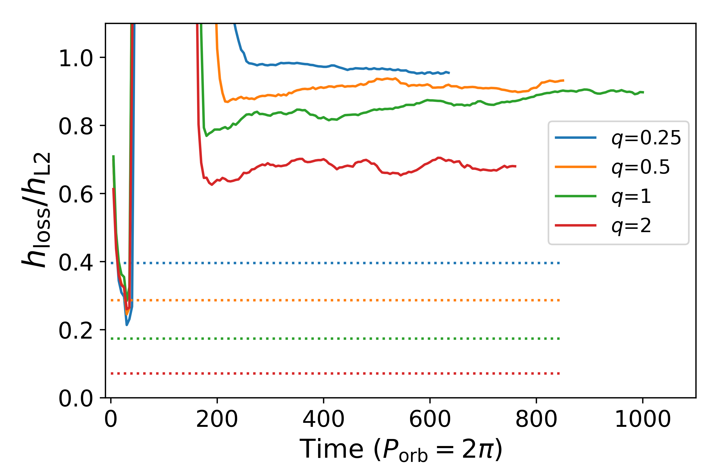

Rapid binary mass transfer: Circumbinary outflows and angular momentum losses
A movie of the equatorial plane of one of the MT simulations I performed. Mass is initialized in an envelope atop the donor's core. As time progresses, mass flows toward the companion, located a distance a from the donor. Also labeled are 2 Lagrange points, L2 and L3. Time is in units such that 2π corresponds to 1 orbit.
I performed 3-dimensional hydrodynamical simulations of mass transfer (MT) between a giant star and a point mass accretor, using the PLUTO code. There are a lot of uncertainties associated with MT, but it is a phenomenon that occurs often in astrophysics - most stars are actually found in binaries, and many are close enough that one or more episodes of MT will occur in the binary's life. For this project, I focused on high mass transfer rates, where the mass transfer becomes highly non-conservative, and material spills out from the accretion disk in a stream that carries mass and angular momentum out of the binary.
A movie of the equatorial plane of the simulations is shown above. At the start where t=0, the vast majority of the gas is found in the envelope of the donor, centered around the domain's midpoint. I do not simulate the core of the donor, so that region is colored white. I injected heat into the donor so that it slowly expands and overflows its Roche lobe - meaning that some of the material will no longer be bound to the donor, but will flow toward the accretor (the pink-colored point). t of 2π corresponds to 1 orbit in our units, so I simulate the MT episode for many orbits. By t of about 100, material has begun to flow from the donor toward the accretor, passing through the inner Lagrange point, L1. By t of about 200, material has built up in an accretion disk around the accretor, but a large amount of material is also spilling away from the binary. These outflows become more pronounced as time progresses and the simulation reaches a quasi steady-state. Most of the outflowing material originates near L2, the outer Lagrange point, colored orange. This means that material from the accretion disk is able to escape the potential of the accretor and flow out through L2, forming the circumbinary outflow that wraps around and moves outward. Another outflow, with less mass in it, originates in the vicinity of L3, the Lagrange point on the side of the donor star (colored cyan).
In our analysis, I focused on the properties of the outflow leaving L2, calculating the average energy, velocity, and angular momentum (AM) of gas outflowing from the binary. More details can be found in the paper below, but the AM of the outflowing gas is especially important because, by conservation of AM, any AM gained by the outflowing material will be lost by the binary's orbit. This means that non-conservative MT, plus a high AM carried by the outflowing material, will significantly shrink the binary's orbit - having implications for post-MT period, mergers, and the populations such as binary black holes. I characterized the average specific AM hloss of outflowing gas - AM per unit mass - finding that it had a value similar to that of the L2 point. This makes sense, given where the outflow originates in the movie above, and is very important because the specific AM of L2 is much higher than the accretor's specific AM. This means that any material able to escape through L2 carries a lot more AM than if it left near the accretor (e.g. in a fast wind), and will more significantly shrink the binary's orbit.
The plot below shows hloss in units hL2 for simulations of different binary mass ratio (accretor/donor mass). In all cases, the ratio is close to unity, meaning that the outflow has approximately the specific AM of L2, and AM is being efficiently extracted from the binary. See the paper for more details of the hydro sim setup, as well as more details of the outflow's properties.
The specific AM carried by outflowing gas, for simulations of varying mass ratio q, in units of the specific AM of L2. For each value of q, the dotted lines show the specific AM of the accretor in units of the specific AM of L2.
